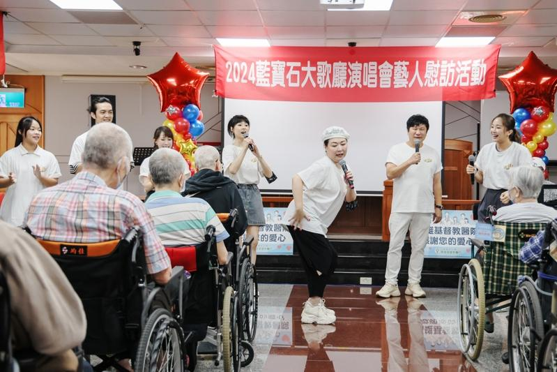

一连2天的2024「真爱秀·蓝宝石大歌厅」刚落幕，主持人胡瓜马不停蹄投入公益，号召张秀卿、曹雅雯、赖慧如、郭忠祐、钟采颖及黄露瑶等艺人，在高雄展开3场的「幸福送入你心」慰访活动，并捐出自己「蓝宝石」的酬劳献爱心。
胡瓜把艺人、物资带进长照机构，分别前往苓雅区的方舟养护之家、鸟松区的宏仁老人长期照顾中心及燕巢区的济兴长青园照顾中心，张秀卿一出场就开玩笑说为参加活动，推掉演出少赚好几百万，因此长辈们可说是赚到好几百万，随后演唱快、慢不同版本的代表作「车站」，其他人排队模仿列车在场内走动，带动现场气氛。
赖慧如、郭忠祐、钟采颖及黄露瑶各自献唱金曲，胡瓜则跟现场最高龄105岁的阿嬷交互，送出千元红包，曹雅雯演唱江蕙的代表作之一「家后」，动人歌声不仅让台下长辈们忘情拿起麦克风跟着合唱，连工作人员都忍不住感动落泪。
高雄市长陈其迈与长官们到场支持，陈其迈笑称大家都很熟悉胡瓜大哥，虽然都是从小看到大，但因为他勤做爱心都不会老，接着与众人合唱「快乐的出航」，引发阵阵尖叫。